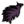
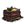
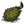
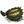

Pigs are neutral mobs that live in Pig Houses. Pigs are humanoid creatures with a hunched posture, and they wear grass skirts as their default clothing. Attacking a pig will aggravate it and all nearby pigs. Pigs drop 1 Meat or 1 Pig Skin upon death. They respawn from their houses 4 days after they have been killed.
They are considered innocent creatures and killing one adds 3 points to the player's naughtiness level, which can cause Krampus to appear. Pigs will eat any Food item lying on the ground. If a Pig eats a Vegetable, Fruit, or Petals, either off the ground or received from the player, it will produce a pile of Manure, which it can do every 15 seconds. This makes them one of the main sources of Manure in the game. Pigs will also see Lureplant's meat lures as food, and will pick and eat the lure if they get close enough to the plant.
They take two blasts from the Ice Staff to be frozen, and two shots from a Sleep Dart to put under. Pigs, followers or wild ones, may be healed with any healing items. They are afraid of the dark and can get hungry, but they will not die by darkness or starving, nor will they be damaged by toxicfood. All Pigs are hostile to Webber because he is considered a Monster.
Guardian Pigs are aggressive Pigs that spawn from Pig Torches. They have higher Health than regular Pigs but drop the same resources. They cannot be bribed by Meat or attracted by One-man Band, making them appear to be very loyal to their Pig King.
If a Guardian Pig is dead, it will respawn at its Pig Torch after 3 days. In Sandbox Mode, they may be located seemingly in the middle of nowhere usually guarding small patches of Grass and Berry Bushes. While in Adventure Mode, they stay in the Pig Fortress, which is surrounded by Wood Walls. In world 4 of Adventure Mode, you can find 4 Pig Torches surrounding the Pig King instead of Obelisks. Sometimes the Guardian pigs will be protecting a Maxwell Statue, instead.
During a full moon or after eating 4 pieces of Monster Foods (), Pigs and Guardian Pigs will turn into Werepigs. A typical Werepig will transform back into a normal Pig after 4 game hours (shorter for Guardian Pigs) of being a Werepig or the start of the next day, whichever comes first.
Like most Monsters, they are hostile and will attack anything nearby (including other Pigs). Werepigs will stop to eat any Food on the ground and will produce Manure if they eat Fruits or Vegetables. Unlike normal Pigs, they will also eat raw Mandrakes. Werepigs take two blasts from the Ice Staff to be frozen. When killed, they drop 2 pieces of Meat and 1 Pig Skin.
Below is the number of hits it takes with each weapon to kill Pigs and their offspring when playing with characters with a default damage modifier. The Weather Pain is not included due to the random nature of its projectile.
Feeding a pig any Meats, Eggs or meat-based food (even Pig Skins and Slurper Pelts ) will cause the pig to follow and help the player for (meat food hunger points × 19.2 seconds), up to 2.5 game days. For example, feeding a Morsel to a pig will cause the pig to follow the player for half a game day. If the Pig is aggressive towards the player, this will cause it to stop attacking. It is possible to attack following pigs by Ctrl-clicking on them. Upon attacking the following pig, the pig will become aggressive, and stop following the player. Feeding the pig meat will cause it to stop attacking, and feeding it another will cause it to follow again.
Friendly pigs will increase the player's Sanity immensely when they are near the player; however, they will try to keep some distance unless they are sleeping or chopping trees. Pigs are only temporary followers, and when their loyalty time is about to expire, they will display a "hungry" animation, in which they pout and rub their bellies. Feeding the pig again at this point will reset its loyalty time. If loyalty time runs out and the player doesn't feed the pigs more meat, or the player happens to die and resurrect, they will return to their respective homes or wander around if they're homeless. Following Pigs can be used to assist in combat. Pigs are able to kite enemies, which is useful when picking off individuals, but may not be effective when fighting a large group of enemies. Simply issuing an attack command on the target, but then backing off without actually engaging the target, will send following Pigs to attack. This can be used to hunt neutral animals or kill hostile Mobs without endangering the player. However, Pigs will attack all monsters, including Spiders, Tentacles, and Treeguards on sight, and there is no way to get them to stop fighting.
Pigs can also be employed to chop down Trees. To make them chop trees, the player must hit any tree with an axe once. Pigs will keep chopping trees until the player runs a short distance away. If they cause a Treeguard to spawn, the Treeguard will attack them.
Free Pigs go back to their houses at dusk, while befriended and homeless Pigs become anxious and start to uncontrollably run around in search for light, as they fear the darkness. The player should quickly provide a light source such as a Torch or a Campfire in order to calm befriended Pigs. Once it is night, the Pigs will sleep beside the light source provided. In Winter, Pigs will not sleep but will instead stay awake around the fire with normal dusk dialogue, while displaying a scared animation.
At night, if Pigs are not asleep yet, and Spiders or Batilisks are nearby, following Pigs will chase and attack them regardless of light level. After killing the targets, the Pigs will retreat back to a light source. Unfortunately, while fighting Spiders, the combat will cause a snowball effect, and other Spiders in the area will attack the Pigs. Both parties will continue to fight until one of the groups is wiped out. Any dropped meat or skin will be eaten by both parties during and after combat unless the player wishes to risk going into the battlefield to retrieve the items.
Follower pigs can still be damaged by tooth traps set by the player. However, setting off a tooth trap won't cause the following pig to become hostile. Therefore it is possible to have a pig follow you and lure them into tooth traps to kill them.
Guardian Pigs
Guardian Pigs seem to have a certain degree of discipline, as they do not eat any food on the ground and stay near the Pig Torch to keep it lit. They will chase away normal Pigs if they stray too close to them.
Guardian Pigs' behaviour changes according to the location of their Pig Torch. If the torch is beside a Pig King, the guardians will reluctantly allow the player to stay and trade with their king. However, if the torch guards a fortress or is far from the king, the Guardian Pigs will pursue the player until they've run a certain distance from their torch.
Pigs can wear headgear items. Clicking on a Pig with a headgear item selected will equip it on the Pig.
If a Pig receives a head armor item, it will be able to receive its damage reduction effects. The durability will still be drained if the Pig gets damaged. Usually, the only way to get hats back from Pigs without killing them is to replace it with another hat, as fighting the Pig will break it before the Pig dies. Frogs can also make them drop a given hat, too. The Pigs can also wear the Miner Hat; while wearing it, they will provide light and not panic during dusk or in a Cave, while also preventing nearby Pigs from panicking.
Tips
If you have enough Monster Foods, you can get better drops by killing Werepigs instead of Pigs. Give one Monster Meat to a Pig and lead it out of the Pig Village. Then give it three more Monster Meats to make it turn. You don't get naughtiness for killing Werepigs. However, other Pigs may attack you until completely transformed because the Pig isn't a Werepig yet when transforming.
A Werepig can be used to convert stacks of Petals or other unwanted Vegetables to Manure as it will eat through a whole stack in one sitting without chasing anything.
To gain maximum sanity from friendly Pigs, the character must get very close to them - it is possible when they are busy chopping trees or sleeping, or by trying to give them anything. The player can push Pigs around while they're asleep, which is useful to group them close together to gain maximum benefit from multiple auras. Another way is to make a corner out of Walls and trap (a) friendly Pig(s) in it.
If there's a group of Pigs near Spider Dens or a Spider Queen, you can easily get them all to attack for you by befriending one Pig and sending it to attack the Spider Dens or Spider Queen. When the spiders attack your ally, the neutral Pigs will rush in to help it, allowing you to collect the loot and gain the benefit of a large entourage for only 1 meat (the one used to befriend the Pig in the first place).
A Werepig pack is dangerous. It is advised that one stays away from Pig Villages during the night of the full moon (even if it means leaving the player's base). If you want to kill a Werepig (or to simply see one), it is best to use the alternative method by feeding a normal Pig Monster Meats during the day.
A good way to farm Manure is leave Vegetables out (Ctrl-click to separate stacks) in front of a Pig House. The resident will eventually eat them all, leaving you to collect the Manure later.
Pig Names
Random names are given to pigs. They can be viewed by mousing over the pig (and holding the examination key if it isn't friendly).
The Pig King can be found on a patch of Wooden Flooring surrounded by eight Obelisks, four big and four small, or Pig Torches, next to several Pig Houses. He will give the player Gold Nuggets in exchange for suitable objects or most Meat items.
Trivia
Pigs are referred to as "Pig Men" in the game files, but this label is never seen in-game, as the Pigs are referred to by their name. However, when Wolfgang examines a lit up pighouse while it's night, he will say, "Hey! Come out here, pig man!"
Pigs used to pick up any food left lying on the ground at first sight. This made it difficult for players to take on enemies with their pig friends and still get the meaty loot, so now there is a short delay before pigs recognize and eat any recently dropped food items.
The pigs punching down trees may be a reference to Minecraft, in which punching down trees is the first thing the player should do, and that there are also Pigmen (which are unimplemented), though there are Zombie Pigmen. However this seems quite unlikely, as the connection is incredibly sparse. (Actually, the pigmen in Minecraft were originally intended to be used as villagers in a later build of the game, this was scrapped for the current Minecraft villagers, so, the connection may be a bit more "there" than that)
Pigs seem to have many Roman Names, especially those of emperors, such as 'Augustus', 'Constantine', 'Quintillus', 'Nero', 'Romulus' and 'Vespasian'.
In previous updates, Pigs used to talk more often, saying things along the lines of "You not pig" and "Ugly monkey man" when referring to Wilson. These lines have since been removed.
Pigs used to panic if given any non-fire light source before All's Well That Maxwell, and they will still refer to any light source as a fire.
Their phrase "For great justice!" is a reference to All your base.
Though they cannot be bribed, the player can still feed meat items to Guardian Pigs.
A Werepig will retain any hat item given to them before transformation. If killed, it will drop that item, similar to a Pig.
If a Pig is being chased by any type of hostile Pig, it will run from it. It will keep running if the Pig gets in range, until the Pig is hit.
It was once possible to easily kill a Werepig during its transformation phase before it had a chance to attack, since it would stop to howl before beginning its assault, giving the player ample time to land many hits. This is no longer possible as Werepigs will now instantly transform when hit.
At night, Pigs in their houses will sometimes talk as if they weren't. For instance, they will talk about how much they dislike darkness, and when hostile mobs wander near, they'll make their usual fight chatter.
If you built a Pig House near the ocean, occasionally, they will (re)spawn and walk on the ocean.
Pigs have also been known to "moonwalk".
Due to the way the "Give" command works, it's possible to give Pigs items such as Thulecite or Gems, which cannot be retrieved without killing the Pig. Pigs however will still turn down Teleportato pieces or Gravedigger items.
In previous updates, if a Pig's house was behind an obstacle (say, a land border), at dusk the Pig would run continuously into the obstacle or border through dusk and night time until day returned. This still happens, but very rarely.
If there has been a full moon since the last time the player has entered or exited a cave, any Pigs following will turn into Werepigs when the player switches levels. This is due to the world's time needing to catch up on the new level, and ultimately passing through the missed full moon. To prevent this, change levels alone initially, then have the Pig follow through.

")
")
")

{kind=link}
{kind=link}
{kind=link}
{kind=link}
{kind=link}
{kind=link}
{kind=link}
{kind=link}
{kind=link}
{kind=link}
{kind=link}
{kind=link}
{kind=link}
{kind=link}
{kind=link}
{kind=link}
{kind=link}
{kind=link}
{kind=link}
{kind=link}
{kind=link}
{kind=link}
{kind=link}
{kind=link}
{kind=link}
{kind=link}
{kind=link}
{kind=link}
{kind=link}
{kind=link}
{kind=link}
{kind=link}
{kind=link}